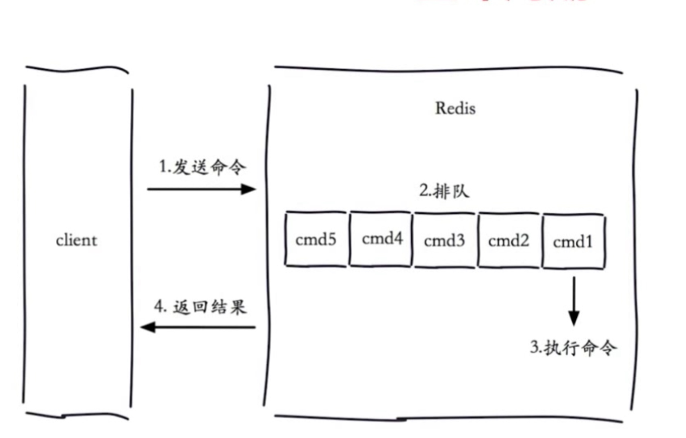

瑞士军刀
用途
- 慢查询
- pipeline
- 发布订阅
- Bitemap
- HyperLogLog
- GEO
慢查询
- 
- 慢查询发生在第三个阶段
- 客户端超时不一定是慢查询
- 但是慢查询是客户端超时的一个可能因素
- 两个配置 slowlog-max-len 长度 1000
- slowlog-log-slower-than 时间 1ms
- 获取慢查询
- slowlog get 获取慢查询信息
- slowlog len 长度
- slowlog reset 清空队列长度
pipeline
- 原生M操作是原子
- pipeline拆分成多个pipeline子命令

发布订阅
- subscribe sohu:tv
- publish sohu:tv "Ok"
- pubsub numsub channel 给定频道的订阅数量
- pubsun channels 订阅的频道
消息队列
Bitmap
- 字符串对应的二进制位
- setbit key offset value
- offer超出中间都会补0
- bitcount key 指定区间1的个数
- bitop op destkey key1 key2
- bitpos key target start end
- 独立用户统计
- 使用
- 注意setbit偏移量有较大损耗
- 位图不是绝对的好
HyperLogLog
- 极小的空间完成数量统计
- 本质还是字符串


GEO
- 地理位置信息
- geoadd
- geopos
- geodist
- geodist city:loc tianjin beijing km
- georadiusbymember key beijing 150 km
- type geoKey zset
- 没有删除zrem